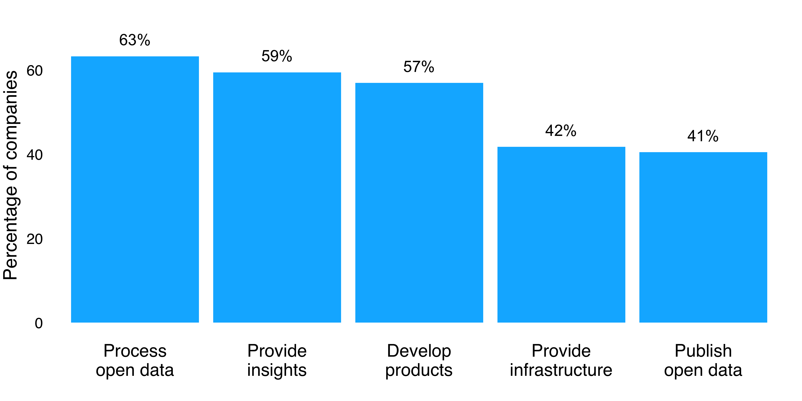
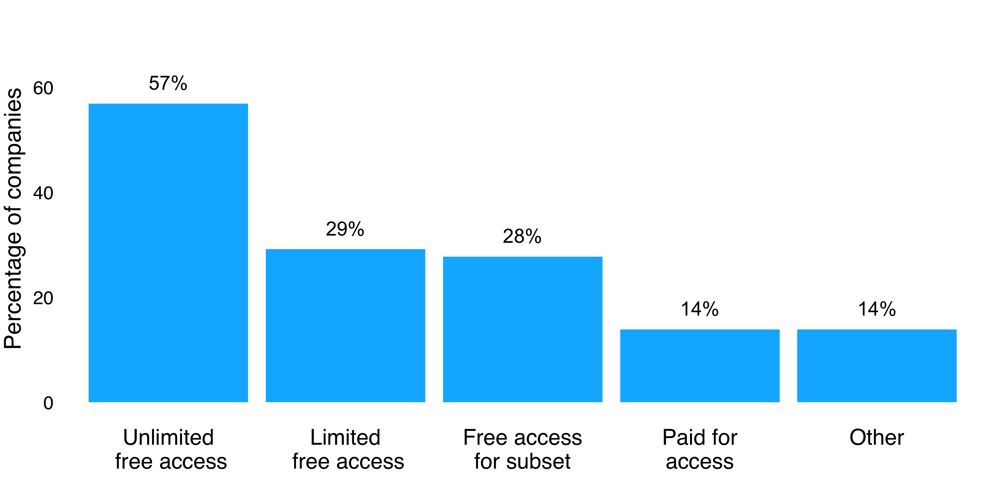

How UK companies are using open data to innovate
Open data startups: forming new businesses based on open data
SMEs: diversifying product portfolios with open data
Large companies: embracing open data
How UK companies work with open data
Business approaches to open data products and services
How to cite
Our research demonstrates that UK companies are using open data to create new products and develop new business models, and that this is taking place across diverse company types and sizes.
Open data startups: forming new businesses based on open data
Open data startups are emerging micro enterprises formed to explicitly exploit the benefits of open data. Often this comes in the form of a new product or service which depends on open data to exist. Across a range of industries the open data startup community are critical disruptors, challengers and innovators.
We identified a number of open data startups that are focused on impact other than purely economic i.e. social and environmental. For example, FoodTrade does not just consume open data to develop its allergen compliance tool; it also aspires to redesign the food system in a more sustainable way:
"Transparency is a failure of the food system at the moment. So there is a great opportunity for an open data revolution to come in and disrupt the food system. FoodTrade want to be the Wiki of the food system. We want to make market intelligence open to people so that they could then help themselves and start trading with each other. Our goal, from the start, was to make the food system sustainable and responsible."
- Ed Dowding, FoodTrade
SMEs: diversifying product portfolios with open data
Our research has identified a number of cases of established SMEs using open data to diversify their product and service offerings.
For example, GeoLytix offers data analytics services to large retailers. Open data enabled the company to both create a distinctive brand in a market dominated by large enterprises, but also develop a new line of unique data products that clients can purchase for their internal analytics operations:
"We started to create open data products in order to provide better quality data analytics to our customers. Especially smaller companies that didn’t have the capacity to build these datasets on their own. We realised that being a data consultancy is a profitable line of work. As a small for-profit company, open data products allow us to build reputation in our sector and expand our customer base, but also contribute back to the ecosystem and help improve the quality of open data."
- Sarah Hitchcock, GeoLytix
Similarly, Shoothill, a company specialising in marketing campaigns for the creative industries, started developing open data products when commissioned to integrate data from the Environment Agency in web-based street maps. This initial project led to a product line based on flood alerts, including GaugeMap which has been recognised for its innovative and easy-to-use visualisations based on open data. Entering the open data ecosystem enabled Shoothill to build expertise in handling environmental data and develop new consulting services around it:
"A lot of people have seen our flood maps now. Our brand is a brand that they can trust. We have establish an area of expertise. We’re good with environmental data, we know what we’re doing, we’ve got a lot of experience in it. People are engaging with us to build systems that use either part or some of this data or mix it with other data sets, to come up with something useful. This has become quite a big part of our business."
- Rod Plummer, Shoothill
Mime Consulting, a boutique consultancy in the educational sector, shows how open data products can help companies to grow their customer base within their sector and reach new customer segments:
"Open data helped us raise awareness of the importance of data-driven decisions guiding post-GCSE educational choices. It also enabled us to gain access to more schools and local authorities that wish to explore the possibilities offered by open data."
- Steve Preston, Mime Consulting
Large companies: embracing open data
Arup are demonstrating how a big company can embrace open data. The company, in the context of its digital.Arup services for the built environment, uses open data for the development of products and services offered to their clients.
One such example is The Hazard Owl, Arup’s Risk Information Action System. By using real-time natural hazard information from public feeds, the system alerts clients of natural disasters to initiate risk mitigation and business continuity plans.
Arup not only embed open data in their technical infrastructure; they also use it as a tool to improve engagement between citizens and city leadership.
"Arup is now moving to the next level: how to develop technical architectures to make this data flow? How do you set up in a city or at a city scale, architectures and standards that allow the reduction of cost and friction but also respect privacy and trust issues around data? And I think the open data framework again is one of the key methodologies to do that."
- Volker Buscher, Arup
How UK companies work with open data
UK companies play a range of different roles when it comes to open data, and our research reveals a number of these.

Figure 2.1: Responses to the question "How does your company currently use open data?" See Appendix Table A2.1 for a table of responses including frequencies. (n = 79, multiple responses allowed).
Nearly two thirds of companies surveyed (63%) are processing open data, unsurprising given that open data quality is often a key concern for businesses. Almost as many companies are developing products using open data (59%) and providing insights based on open data (57%).
Fewer companies are providing open data infrastructure (42%). This may reflect the dynamic that in most contexts there are fewer infrastructure providers than users of their infrastructure. A sizeable number of companies responding to the survey are publishing open data (41%), which is consistent with our findings that government and the public sector is not the sole source of open data.
These open data roles do not appear to be exclusive pursuits. Indeed, we found that over three quarters of respondents (79%) were carrying out two or more of these functions.
Business approaches to open data products and services
When it comes to pricing for open data products and services, open data companies are using a variety of different methods. In fact, over a quarter (28%) of companies indicated they were using two or more mechanisms of the mechanisms described below, either for the same or different open data offerings.

Figure 2.2: Responses to the question "Which pricing mechanism(s) does your company use for its open data products and/or services?" See Appendix Table A2.2 for a table of responses including frequencies. (n = 72, multiple responses allowed).
The majority of respondents (57%) are providing products and services which give unlimited free access to everyone. The reasons for doing so vary for particular companies and for particular products. One key driver identified by interviewees is the role open data offerings can have in attracting customers to companies’ other products and services.
"It’s better to give some of it away and use it to convert customers."
- Ian MakGill, Spend Network
Over a tenth of companies (14%) provide free access to a subset of users. This can be another means by which to attract and retain customers.
"We intend to make the core features of Skills Route accessible for free by schools and their students. We’ve found that when you get your product into people that like it, they’re your best salespeople. We know there is a demand for this; it is about raising awareness, and developing a good product that meets a clear need."
- Steve Preston, Mime Consulting
In addition, over a quarter of companies (28%) are providing rate or volume limited access to their open data offerings, indicating the adoption of freemium pricing models for open data products and services, as in many other areas of the digital economy.
Almost a third of respondents (29%) provide only paid for products and services. Companies offering paid for consultancy services may explain the prevalence of this model. In addition a number of companies explicitly stated that their pricing was dependent upon the client.
The findings in this section indicate that UK open data companies, collectively, are adopting a wide variety of commercialisation approaches. Further research is required to more thoroughly understand the specifics and benefits of various business models when applied to open data products and services.
The other sections in this report focus on the range of companies investing in open data, the kinds of open data that companies use or produce, the challenges they face in doing so and some real-life company examples of open data innovation.
How to cite:
Please cite this report as: Open Data Institute (2015) Open data means business: UK innovation across sectors and regions. London, UK. Available at open-data-means-business-uk-innovation-sectors-regions